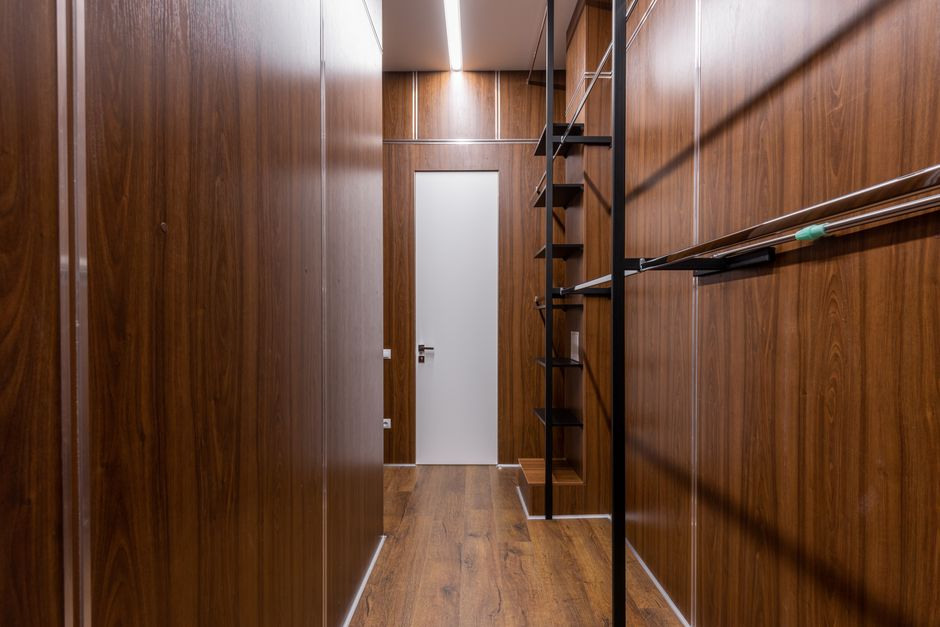
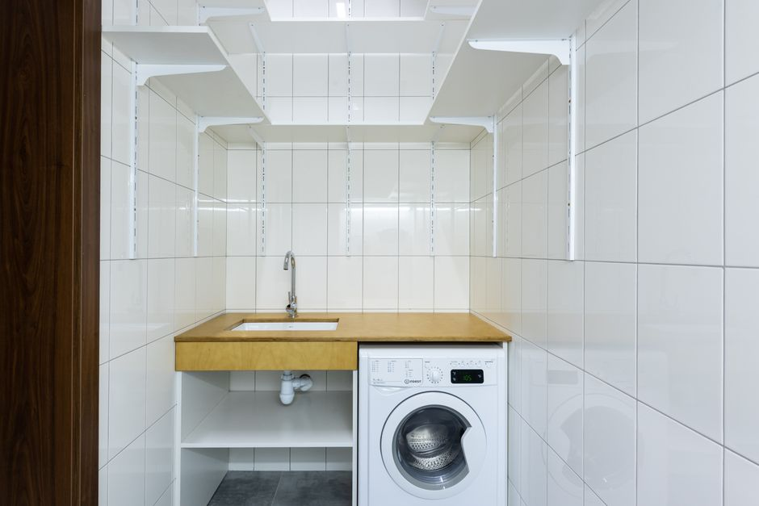

Guide pour installer des étagères murales en hauteur

Photo: Max Vakhtbovych / Pexels
Installer des étagères murales en hauteur : un guide pratique pour l'organisation en petit espace
Dans un espace limité, chaque centimètre compte. Les étagères murales hautes sont l'alliée parfaite pour optimiser l'espace et créer une organisation efficace. Voici une marche à suivre pour installer ces étagères en toute sécurité et efficacité.
Étape 1 : Évaluez vos besoins
Avant toute chose, mesurez l'espace disponible dans la pièce où vous souhaitez installer les étagères. Ayez une idée claire de la hauteur et de la profondeur des objets que vous comptez y stocker. Par exemple, si vous prévoyez de ranger des livres, mesurez leur épaisseur moyenne (par exemple, 3 cm). Cela vous permettra de calculer la quantité et la hauteur d'étagères nécessaires.
Étape 2 : Choisissez les bonnes étagères

Photo: Max Vakhtbovych / Pexels
Considérez la taille de vos meubles et des objets que vous souhaitez ranger. Les étagères trop basses ou trop hautes peuvent ne pas répondre à vos besoins. Par exemple, si vous avez des meubles de 90 cm de hauteur, vous pouvez opter pour des étagères à 30 cm d'intervalle pour une bonne circulation d'air et de lumière.
Étape 3 : Choisissez le bon outillage
Pour installer des étagères murales, vous aurez besoin d'un marteau, d'un tournevis, et d'une perceuse électrique. Assurez-vous que vous avez également des vis et des vis-percées adéquates pour le matériau de votre mur. Si votre mur est en brique, utilisez des vis-percées muraux. Si c'est en béton, assurez-vous d'avoir des vis appropriées.
Étape 4 : Fixez les points de fixation
Sur une pièce de 3,60 m de hauteur, prévoyez de fixer une étagère tous les 60 cm. Cela permettra une bonne répartition du poids et une stabilité optimale. Utilisez un niveau pour assurer une installation droite. Marquez les points de fixation sur le mur avec un crayon.
Étape 5 : Posez les étagères
Utilisez la perceuse pour percer le mur en suivant les marques. Placez les vis-percées dans les trous et vissez les étagères. Assurez-vous qu'elles sont bien fixées en vérifiant avec le niveau. Si vous installez des étagères à 2 mètres de hauteur, assurez-vous que vous avez une chaise ou un échafaudage pour vous aider à atteindre le haut.
Étape 6 : Rangez vos objets
Une fois que toutes les étagères sont installées, il est temps de commencer à les remplir. Commencez par ranger les objets les plus lourds en bas et les plus légers en haut. Par exemple, pour un espace de 3,60 m de hauteur, placez les livres les plus épais en bas et les plus fins en haut.
Conseils supplémentaires
- Nettoyage : Nettoyez vos étagères murales tous les 6 mois pour enlever la poussière et les saletés qui peuvent compromettre l'adhérence des vis.
- Inspection : Vérifiez l'état de vos étagères tous les 12 mois. Si vous remarquez des signes de faiblesse, comme des vis qui se desserrent, remédiez rapidement au problème.
- Utilisation adaptée : Évitez de surcharger vos étagères. Respectez les limites de charge indiquées sur chaque étagère. Par exemple, une étagère de 15 kg ne devrait pas supporter plus de 15 kg.
Exemple concret
Imaginez que vous avez une chambre de 4,20 m de hauteur. Vous souhaitez y installer des étagères pour ranger des livres, des photos et des objets de décoration. Après avoir mesuré vos livres, vous constatez qu'ils ont une épaisseur moyenne de 3 cm. Vous choisissez donc des étagères de 30 cm d'intervalle, soit tous les 60 cm.
Vous commencez par fixer les étagères en utilisant des vis-percées pour un mur en brique. Vous placez vos étagères de manière à ce que les livres les plus épais soient en bas, et les plus fins en haut. Vous nettoyez et inspectez vos étagères tous les 6 mois pour les maintenir en bon état.
En suivant ces étapes, vous transformerez votre espace en une zone bien organisée et fonctionnelle, tout en profitant d'une meilleure utilisation de l'espace.
Produits recommandés
En tant que Partenaire Amazon, je réalise un bénéfice sur les achats remplissant les conditions requises.